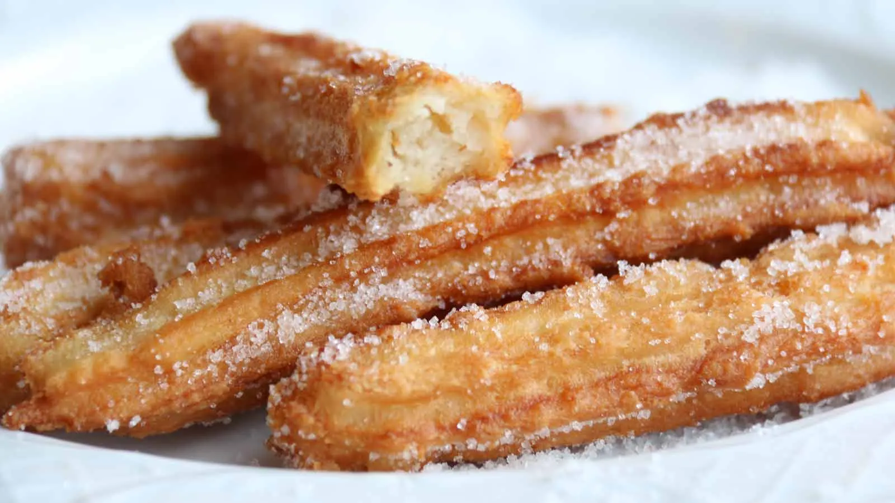

Churros

Description
This recipe will show you how to make churros in 3 easy steps, using the ingredients provided.
Ingredients
- 2 quarts vegetable oil
- 1 cup water
- 1/2 cup margarine
- 1 cup all-purpose flour
- 1/4 teaspoon salt
- 3 eggs
- 1/4 cup white sugar
- 1/4 teaspoon ground cinnamon
Steps
- In a deep skillet, head oil to 360 degrees F. Oil should be 1 1/2 inches deep.
- In a saucepan, heat water and margarine to a boil. Combine the flour and salt,
and stir it into the boiling mixture. Change heat to low and stir
until mixture forms a ball;
about 1 minute. Remove from heat and mix in the eggs one at a time. Spoon the mixture into a pastry bag fitted with a large star tip
- Squeeze out 4 inch long strips of dough into the hot oil. Fry 3 or 4 strips at once, until golden brown;
about 2 minutes on each side. Remove from oil to drain on paper towels.
Stir the sugar and cinnamon together, and roll the churros into the mixture while still hot.